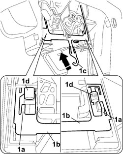
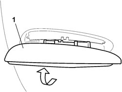
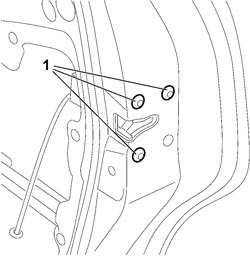
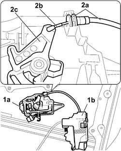
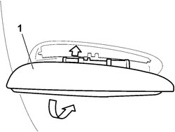
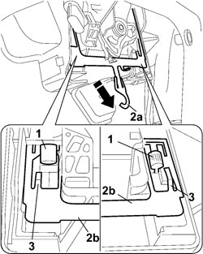

7010C12 <x>REAR SIDE DOOR EXTERIOR HANDLE (ONE), LH OR RH - R&R WITH INTERIOR SUPPORT FRAME REMOVED</x>
- Path
- Procedures > 70 FITTINGS > 7010 PASSENGER COMPARTMENT REAR SIDE DOORS > 7010C REAR SIDE DOOR LOCK CONTROLS > 7010C12 <x>REAR SIDE DOOR EXTERIOR HANDLE (ONE), LH OR RH - R&R WITH INTERIOR SUPPORT FRAME REMOVED</x>
- Kind
- repair procedure (removal / refitting; the operation number is the code)
- Applies to
- all engines; all production periods
- Interactive page
- https://sloeber94.github.io/elrnDB-fCrm/en/#/194000904
Applies to: all engines; all production periods
 Removing
Removing
 Refitting
Refitting1. Lift up the safety tabs (1a) for the plate joining the exterior/interior handle (1b) on both sides and push upwards using the end (1c) of the actual plate to release the pins (1d) securing the exterior handle.

Applies to: all engines; all production periods
1. Extract the exterior handle turning it upwards.

Applies to: all engines; all production periods
1. Undo the three bolts fixing the central locking actuator to the door frame.

Applies to: all engines; all production periods
1. Remove the interior handle (1a) assembly from the central locking actuator (1b).
2. Release the end (2a) of the handle and disconnect the connecting rod (2b) from the lever (2c).

Applies to: all engines; all production periods
Refitting
Removing- Connect the connecting rod and secure it to the interior handle.
- Place the central locking actuator in position and secure it using the fixing bolts.
- Position the interior handle and keep it pressed against the door frame.
1. With the help of a second mechanic, fit the exterior handle in place starting from the top part turning it downwards.

Applies to: all engines; all production periods
1. When the fitting is completed, keep pressing the exterior handle so that the mounting pins are correctly inserted in the interior handle.
2. Secure the interior handle to the exterior handle pulling downwards until the end (2a) of the plate (2b) is in the end of travel position.
3. Lower the safety tabs on both sides.

Topics that link to this page (8)
- 7010C11 REAR SIDE DOOR EXTERIOR HANDLE - R.R
- 7010C60 CONNECTION LINK BETWEEN INTERIOR OPENING MECHANISM AND REAR SIDE DOOR LOCK (ONE), LH OR RH - R&R
- 7010C61 CONNECTION LINK BETWEEN INTERIOR OPENING MECHANISM AND REAR SIDE DOOR LOCK (ONE), LH OR RH - R&R WITH INTERIOR SUPPORT FRAME REMOVED
- 7010C63 LINK CONNECTING EXTERIOR HANDLE AND REAR SIDE DOOR LOCK - R&R WITH MOUNT REMOVED
- 7010C65 CONNECTING ROD FROM EXTERIOR HANDLE TO REAR SIDE DOOR LOCK - R.R.
- 7010N20 REAR SIDE DOOR LOCK MOTOR/CATCH ASSEMBLY - R.R. WITH DOOR PANEL AND SUPPORT FRAME REMOVED
- 7010N21 REAR SIDE DOOR LOCK MOTOR/LOCK ASSEMBLY, LEFT OR RIGHT - R.R
- 7205E38 STRIPPING REAR SIDE DOOR